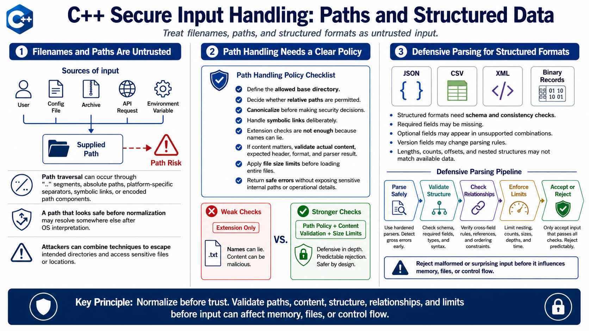

File, Path, and Structured Input
Connecting to LMS... Progress: in progress

Narration
File names and paths are untrusted input when a user, configuration file, archive, API request, or environment variable can influence them. Path traversal occurs when input can escape an intended directory, often through dot-dot segments, absolute paths, platform-specific separators, symbolic links, or encoded path components. A string that looks safe before normalization may resolve somewhere else after the operating system interprets it.
Path handling should start with a clear policy. Decide which base directory is allowed, whether relative paths are permitted, how canonicalization is performed, and how symbolic links are handled. Extension checks are not enough because names can lie. If file content matters, validate the actual content, expected header, format, and parser result. Also set file size limits before loading entire files into memory, and handle errors without exposing sensitive internal paths or operational details.
Structured formats such as JSON, CSV, XML, and binary records need schema and consistency checks. Required fields may be missing. Optional fields may appear in combinations the program does not support. Version fields may select different parsing rules. Lengths, counts, offsets, and nested structures can be inconsistent with the actual data available. Defensive parsing checks structure before use, validates field relationships, limits nesting and record counts, and rejects malformed or surprising input before it influences memory, files, or control flow.